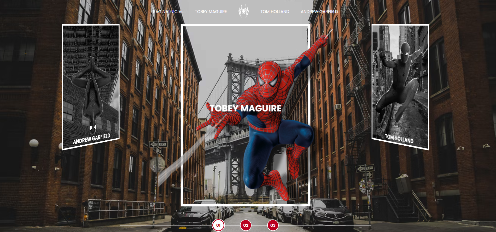
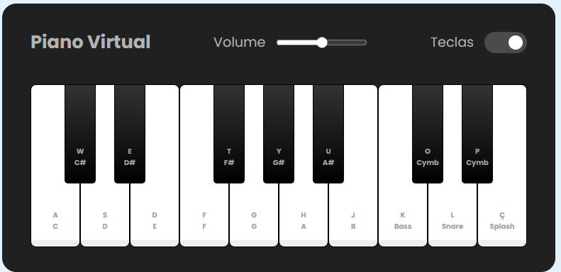

Sobre mim
Oi, me chamo Quintino Medeiros e gostaria de falar um pouco sobre mim, meus projetos passados, presentes e futuros!
Ao longo da minha carreira, tive a oportunidade de atuar em diversas organizações, tanto na iniciativa privada quanto no setor público. Sempre me dediquei a entregar resultados de excelência, além de melhorar processos e produtos sob minha gestão. Durante essa jornada, gerenciei e participei de inúmeros projetos, buscando continuamente o aprendizado e o crescimento. E, com muito orgulho, fiz grandes amizades por onde passei.
Meu foco sempre foi equilibrar pessoas, processos e resultados, buscando promover saúde, qualidade de vida e alta performance, tanto para mim quanto para as equipes com as quais trabalhei.
Minha formação inicial foi em Psicologia, em níveis de graduação e mestrado, com ênfase nas áreas organizacional, social e da saúde. Minha trajetória profissional seguiu pela Gestão de Pessoas, onde desenvolvi expertise em avaliação de desempenho, recrutamento, seleção e desenvolvimento de talentos.
Com o intuito de aprimorar ainda mais minhas habilidades e fortalecer o relacionamento com colegas de trabalho, especializei-me em Gestão de Pessoas, Gestão Pública e Auditoria. Essas especializações permitiram-me agregar os conceitos da administração moderna às minhas atividades diárias.
Durante minha jornada trabalhei em organizações diversas como Governo do Distrito Federal, Banco do Brasil, Tribunal Superior Eleitoral, Conselho Nacional de Justiça e desde 2016 atuo como Analista Legislativo na Câmara dos Deputados lotado na Coordenação de Tecnologias Educacionais e Comunicação do Centro de Formação, Treinamento e Aperfeiçoamento - Cefor.
Nos últimos anos, considerando que sempre trabalhei com processos e produtos mediados por sistemas informatizados, decidi expandir meus conhecimentos para Análise e Desenvolvimento de Sistemas. Tenho focado no desenvolvimento web front-end, análise e visualização de dados, e, mais recentemente, no aprofundamento dos estudos sobre Análise e Demonstração de Dados, com a construção de paineis gerenciais e no conhecimento sobre modelos aplicados de inteligência artificial.
Projetos principais
Nos respositórios públicos do Github, github.com/quintinomedeiros, estão disponíveis diversos projetos que desenvolvi ao longo dos anos. Gostaria de destacar:
Site com as informações sobre os filmes recentes do personagem da Marvel Homem Aranha, com um efeito 3D na home page para o acesso a cada ator - página do Homem Aranha no Github.
Landing page inspirada no mundo invertido de stranger things, que alterna entre os modos claro e ecuro - landing page mundo invertido no Github.
Emulador de piano com percussão - emulador no Github.
Jogo de Jo-ken-po inspirado em Yu-Gi-Oh! - Jogo Jo-Ken-Po no Github.
 Dashboards compilando informações de diferentes fontes como YouTube, Google Sheets etc..
Dashboards compilando informações de diferentes fontes como YouTube, Google Sheets etc..
Tecnologias empregadas nos projetos
Contato e Redes Sociais
https://bit.ly/portifolio-quintino-medeiros
 https://www.linkedin.com/in/quintinomedeiros/
https://www.linkedin.com/in/quintinomedeiros/
 https://github.com/quintinomedeiros/
https://github.com/quintinomedeiros/
© Copyright 2024 - Todos os direitos reservados